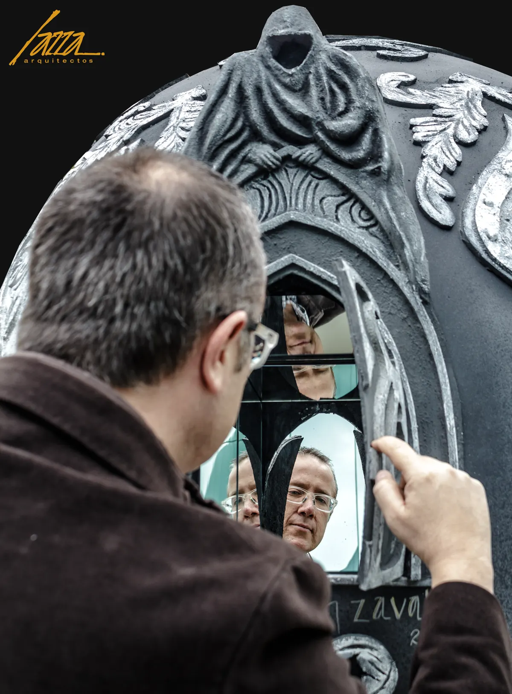

jaime lavín, arquitecto y escultor
Arquitecto, diseñador de interiores y escultor. Fundador del despacho que trabaja desde 1997 con una convicción: ver tu casa diez años antes de que exista.
Quién es y qué hace hoy
quién es y qué hace hoy
Funda el despacho en 1997 y lo dirige desde entonces: casas, oficinas, espacios comerciales y turísticos en el segmento de quien invierte su patrimonio en vivir mejor. Trabaja desde Zona Esmeralda, Estado de México, con un método propio de hiperpersonalización. Cuando le preguntan si es arquitecto, artista o materializador de sueños, se queda con lo último.
El arco de origen
cómo llegó a la arquitectura
Escena 01
la casa que le enseñó a mirar
Desde niño acomoda su cuarto una y otra vez, y le importa cómo queda: dónde va cada cosa, qué se ve al entrar. En su casa no hay un solo arquitecto y todavía no sabe que esa manía tiene nombre. Un día acompaña a un amigo a su casa y se queda mirando lo que hay del otro lado de la puerta: un libro, un espejo, un arreglo de flores. Nada sobra. Ahí entiende que el orden que buscaba en su cuarto es un oficio, y que quiere dedicarse a la arquitectura y a los interiores.
Escena 02
una beca que nadie creía posible
Dice que va a estudiar en Italia con una beca y en casa se ríen. Traduce su solicitud al italiano y al inglés y repite, contra toda evidencia: sí me la van a dar. Se la dan. Tres semanas antes de viajar, su padre muere; los ingresos de la familia se van a cero y la beca se convierte en un regalo de la vida. De ahí vienen los dos motores que no lo sueltan: el hambre y el no conformarse.
Escena 03
italia: el atrevimiento que abrió puertas
En Italia aprende a mirar la arquitectura desde el arte: entra a los edificios como se entra a un museo, con el ojo entrenado desde niño. De ese viaje regresa con una manera de trabajar que no lo abandona: estudiar, preguntar, atreverse.
Escena 04
volver para fundar un despacho
Regresa a México y trabaja donde hay trabajo: encargos propios, interiores, y proyectos al lado de otros arquitectos. De esa mezcla sale el oficio completo, el que no se aprende en solitario. En 1997 funda el despacho y su trabajo cambia: además de dibujar, empieza a reunir y a dirigir al equipo que sostiene el proyecto de alguien más.
Su criterio
el arquitecto que ve diez años adelante
Para él, el arquitecto debe ser un profeta: ver lo que viene por lo menos diez años adelante. Por eso sus proyectos no persiguen la moda. Diseña con luz natural, color, agua y paisaje, los cuatro elementos de su paleta, y elige materiales que aguantan el uso diario y ganan carácter con los años.
Vemos tu casa diez años antes de que exista.
El escultor y el lado culto
el arquitecto que también esculpe
En 2019 una de sus piezas recorre las calles: Nuestros Símbolos, su obra para Mexicráneos. La pintura le enseñó proporción, perspectiva y color a los ocho años; la escultura le enseñó que la materia tiene voluntad propia. Compone un espacio como se compone un cuadro, y firma cada obra a mano.

Evidencia verificable
un recorrido que se puede verificar
- Medalla de oro, XII Bienal Iberoamericana CIDI, obra Nueces 2023 a 2024
- Mención honorífica, IX Bienal Iberoamericana del CIDI, Club de Golf Bellavista 2017
- Maqueta de El Encinal, muestra de la IX Bienal del CIDI 2017
- Portada de la edición 72 de México DESIGN
- Columnista del diario Excélsior, con columna propia
- Nuestros Símbolos, obra en Mexicráneos 2019
Estamos muy contentos de que se hayan reconocido nuestros proyectos en un foro como esta Bienal, en donde participan grandes arquitectos e interioristas de México y países de Iberoamérica. Jaime Lavín, 2017
la frase que eligió como firma
Los grandes sueños no se cumplen por suerte, se construyen con propósito.